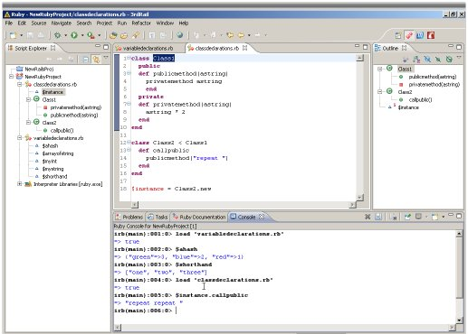

Window
File
The new Ruby project appears as an open project in the Script Explorer.
For a brief overview of Ruby in 3rdRail, see this video: Introduction to the Ruby Console in 3rdRail.
If you are not familiar with the Eclipse framework, see: the Workbench tutorials.
To create a new Ruby project:
Here is what the Ruby environment looks like using a sample project: 
Related Concepts Writing Ruby Code in 3rdRail The 3rdRail Environment CodeGear brand
and product names are service marks, trademarks or registered trademarks of Borland Software
Corporation in the United States and other countries.
CodeGear brand
and product names are service marks, trademarks or registered trademarks of Borland Software
Corporation in the United States and other countries.